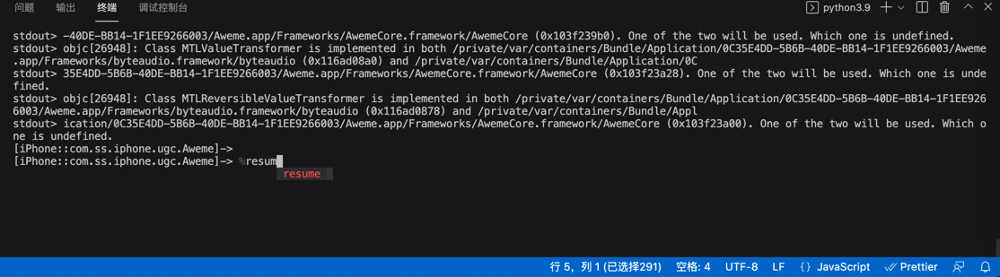

--no-pause和--pause
关于frida启动后，被调试的目标，是否暂停运行的问题：
- 背景
- frida启动调试后，被调试的目标（app或进程），是否已经暂停运行
- 旧版frida：自动暂停运行
- 支持参数：
--no-pause
- 支持参数：
- 新版frida：（逻辑已经变成了）不暂停运行 = 已经继续运行了
- 支持参数：
--pause
- 支持参数：
- 旧版frida：自动暂停运行
- frida启动调试后，被调试的目标（app或进程），是否已经暂停运行
- 所以
- 旧版frida
- 常会遇到一个问题：每次frida（以Attach后Spawn去）启动调试后，程序自动暂停运行
- 解决办法：手动输入
%resume- 
- 解决办法：手动输入
- 所以就希望：frida调试开始后，自动继续运行，不要每次都输入
%resume才继续运行- 解决办法：加
--no-pause参数- 参数含义：
--no-pause automatically start main thread after startup - 举例
frida -U --no-pause -f com.ss.iphone.ugc.Aweme -l frida/dyldImage.js
- 参数含义：
- 解决办法：加
- 常会遇到一个问题：每次frida（以Attach后Spawn去）启动调试后，程序自动暂停运行
- 新版frida
- 用新版frida，加了参数
--no-pause，报错不支持此参数：frida: error: unrecognized arguments: --no-pause- 解决办法：不要加任何参数
- 举例
frida -U -N com.apple.Preferences -l hookAccountLogin_singleClassAllMethod.js
- 举例
- 解决办法：不要加任何参数
- -》
- 如果需要启动后
- 自动继续运行
- 则：无需加任何参数
- 因为新版frida已经变成这个逻辑了
- 则：无需加任何参数
- 自动暂停运行
- 再去加新版才支持的参数：
--pause- 参数含义：
--pause leave main thread paused after spawning program
- 参数含义：
- 再去加新版才支持的参数：
- 自动继续运行
- 如果需要启动后
- 用新版frida，加了参数
- 旧版frida